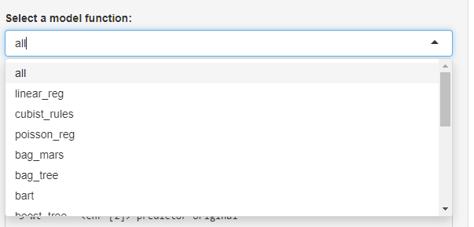

As data science continues to be a sought-after field, creating a reliable and accurate model is essential. While there are various machine learning algorithms available, the process of selecting the correct algorithm can be complex. The {tidyAML} package, part of the tidymodels suite, offers an easy-to-use, consistent interface for building machine learning models. In this post, we will explore a Shiny application that utilizes tidyAML to build a machine learning model.
Today I have updated the tidyAML shiny app to include the ability to set the parameter of the fast_regression() function .parsnip_fns and this is things like linear_reg.
I have updated the UI to reflect using that method as well. Here is the UI changes:
selectInput("model_engine", "Select a model engine:", choices =c("all",make_regression_base_tbl() |>pull(.parsnip_engine) |>unique() ) ),selectInput("model_fns", "Select a model function:",choices =c("all",make_regression_base_tbl() |>pull(.parsnip_fns) |>unique() )
Here are some pictures showing the changes:
UI Change

UI Change 2
Output
So what this means is that we can just pick a function like parsnip::linear_reg() and leave the engine set to "all" and it will build models for all engines supported that work with linear_reg().
The Shiny Application
The Shiny application is a graphical user interface (GUI) that allows users to select a dataset, predictor column, model type, and engine, and then build a machine learning model. The user can upload a CSV or TXT file or choose one of two built-in datasets: “mtcars” or “iris”. The user can select the predictor column, which is the variable used to predict the outcome, and then choose the model type, either “regression” or “classification”. Next, the user can select a model engine and a model function to use in building the model. Once the user has made all the selections, they can click the “Build Model” button to create the model.
The code for the Shiny application can be broken down into two parts, the User Interface (UI) and the Server. Let’s take a closer look at each of these parts.
The UI
The UI is created using the fluidPage() function from the shiny package. The titlePanel() function creates the title of the application. The sidebarLayout() function creates the sidebar and main panel. The sidebar contains input controls such as file input, select input, and an action button. The main panel displays the outputs generated by the model.
The fileInput() function creates a widget that allows the user to upload a data file. The selectInput() function creates dropdown menus for the user to select the dataset, predictor column, model type, model engine, and model function. The actionButton() function creates a button that the user clicks to build the model. The verbatimTextOutput() function and reactableOutput() function display the output generated by the model.
The Server
The Server is where the input data is processed, the model is built, and the output is generated. The Server is created using the server() function from the shiny package.
The reactive() function is used to create a reactive object called data that reads in the data file or built-in dataset selected by the user. The eventReactive() function is used to create a reactive object called recipe_obj that creates a recipe for preprocessing the data. The recipe includes steps to normalize the numeric variables and remove the outcome variable from the recipe.
Two other reactive objects, model_engine and model_fns, are created using the switch() function. These objects contain a list of available engines and model functions for the user to choose from.
Finally, the eventReactive() function is used to create a reactive object called model that builds the machine learning model. The fast_regression() and fast_classification() functions from the tidyAML package are used to build the regression and classification models, respectively.
Conclusion
In this post, we explored a Shiny application that uses tidyAML to build a machine learning model. The application allows users to select a dataset, predictor column, model type, engine, and function to build a machine learning model. The Shiny application is an excellent tool for those who are new to machine learning or those who want to streamline the rapid prototyping process.
Full Application
This is a work in progress, and I want you to steal this code and see what you can come up with!
library(shiny)library(tidyAML)library(recipes)library(DT)library(glmnet)library(rules)library(tidymodels)library(reactable)tidymodels_prefer()ui <-fluidPage(titlePanel("tidyAML Model Builder"),sidebarLayout(sidebarPanel(fileInput("file", "Upload your data file (csv or txt):"),selectInput("dataset", "Choose a built-in dataset:", choices =c("mtcars", "iris") ),selectInput("predictor_col", "Select the predictor column:", choices =NULL ),selectInput("model_type", "Select a model type:", choices =c("regression", "classification")),selectInput("model_engine", "Select a model engine:", choices =c("all",make_regression_base_tbl() |>pull(.parsnip_engine) |>unique() ) ),selectInput("model_fns", "Select a model function:",choices =c("all",make_regression_base_tbl() |>pull(.parsnip_fns) |>unique() ) ),actionButton("build_model", "Build Model"),verbatimTextOutput("recipe_output") ),mainPanel(verbatimTextOutput("model_table"),reactableOutput("model_reactable") ) ))server <-function(input, output, session) { data <-reactive({if (!is.null(input$file)) { df <-read.csv( input$file$datapath, header =TRUE, stringsAsFactors =FALSE )updateSelectInput( session, "predictor_col", choices =names(df) )return(df) } elseif (!is.null(input$dataset)) { df <-get(input$dataset)updateSelectInput( session, "predictor_col", choices =names(df) )return(df) } }) recipe_obj <-eventReactive(input$predictor_col, { rec <-recipe(as.formula(paste(input$predictor_col, "~ .")), data =data() ) |>step_normalize(all_numeric(), -all_outcomes())return(rec) }) model_engine <-reactive({switch(input$model_engine,"all"="all","lm"="lm","brulee"="brulee","gee"="gee","glm"="glm","glmer"="glmer","glmnet"="glmnet","gls"="gls","lme"="lme","lmer"="lmer","stan"="stan","stan_glmer"="stan_glmer","Cubist"="Cubist","hurdle"="hurdle","zeroinfl"="zeroinfl","earth"="earth","rpart"="rpart","dbarts"="dbarts","xgboost"="xgboost" ,"lightgbm"="lightgbm","partykit"="partykit","mgcv"="mgcv","nnet"="nnet","kknn"="kknn","ranger"="ranger","randomForest"="randomForest","xrf"="xrf","LiblineaR"="LiblineaR","kernlab = kernlab") }) model_fns <-reactive({switch(input$model_fns,"all"="all","linear_reg"="linear_reg","cubist_rules"="cubist_rules","poisson_reg"="poisson_reg","bag_mars"="bag_mars","bag_tree"="bag_tree","bart"="bart","boost_tree"="boost_tree","decision_tree"="decision_tree","gen_additive_mod"="gen_additive_mod","mars"="mars","mlp"="mlp","nearest_neighbor"="nearest_neighbor","rand_forest"="rand_forest","rule_fit"="rule_fit","svm_linear"="svm_linear","svm_poly"="svm_poly","svm_rbf"="svm_rbf" ) }) model <-eventReactive(input$build_model, {if (input$model_type =="regression") { mod <-fast_regression(.data =data(),.rec_obj =recipe_obj(),.parsnip_eng =model_engine(),.parsnip_fns =model_fns()) } elseif (input$model_type =="classification") { mod <-fast_classification(.data =data(),.rec_obj =recipe_obj(),.parsnip_eng =model_engine(),.parsnip_fns =model_fns()) }return(mod) }) output$recipe_output <-renderPrint({if (!is.null(input$predictor_col)) {summary(recipe_obj()) } }) output$model_table <-renderPrint({if (input$build_model >0) {print(model()) } }) output$model_reactable <-renderReactable({if (input$build_model >0) {reactable(model()) } })}shinyApp(ui = ui, server = server)